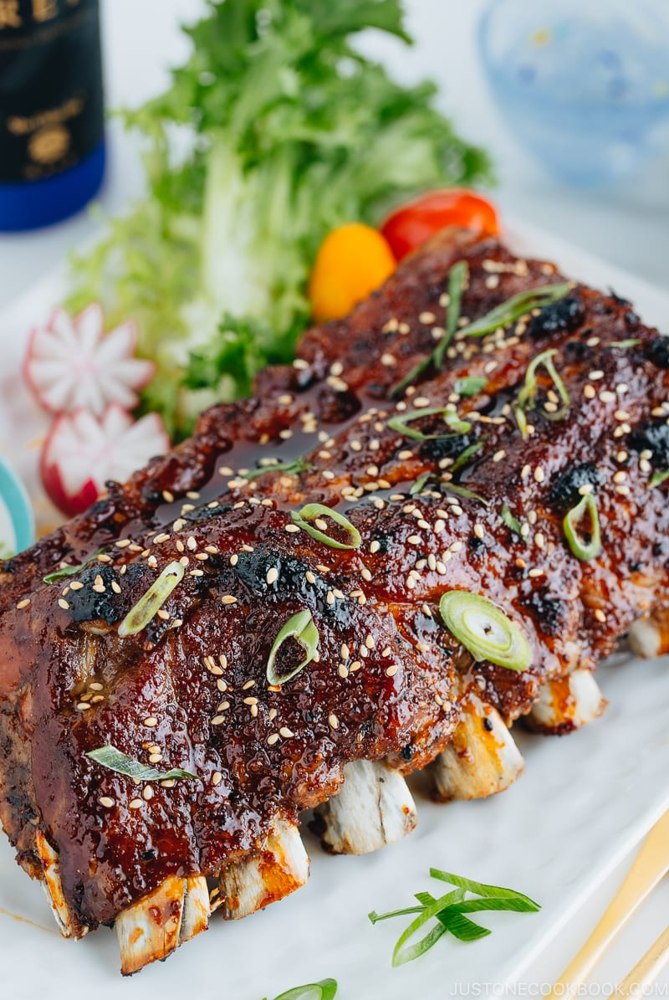

Pork Sticky Ribs

Ingredients
- 2.25 Pounds Baby Back Pork Ribs
Brown Sugar Rib Rub
- 1/2 Cup Brown Sugar
- 1/2 Teaspoon Kosher Salt (coarse)
- 1/2 Teaspoon Chipolte Chili Powder
- 1/2 Teaspoon Smoked Paprika
- 1/2 Teaspoon Onion Powder
- 1/2 Teaspoon Garlic Powder
- 1/4 Teaspoon Cumin
Sticky Sauce
- 1/2 Cup Soy Sauce
- 1/3 Cup Brown Sugar
- 1/4 Cup Honey
- 1 Tablespoon Rice Wine Vinegar
- 1 Tablespoon Ginger (freshly grated)
- 2 Teapoons Sesame Oil
- 2 Cloves Garlic, Finely Minced
- 1/4 Teaspoon Crushed Red Pepper Flakes
Instructions
- Preheat the oven to 300 degrees
- On the back of the rack of ribs, score the white membrane in a one inch diagonal pattern using a sharp knife or completely remove
- Stir the brown sugar rib rub ingredients together. Pat the rub mixture onto the front and back of the ribs
- Place the ribs meat side up on a greased baking sheet or lined with foil or parchement. Cover tightly with foil
- Place sticky sauce ingredients in a small sauce pan. Bring to a low boil and let simmer for 5 minutes. Let the sauce cool to thicken
- When desired rib tenderness is reached, remove the foil
- Turn the oven to broil. Brush the ribs with the sauce and broil for 2-3 minutes. Brush with more sauce and broil again until the sauce begins to caramelize
- Garnish with any left over sauce, sesame seeds, and sliced green onions